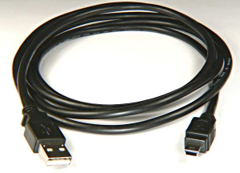
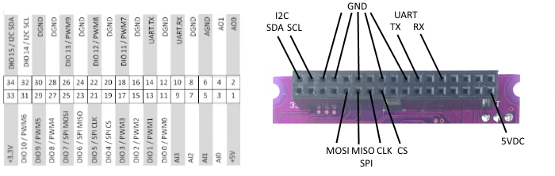

|
AdvancedInstallOptions
IntroductionIn addition to Plug-n-Play installation on the RoboRIO, navX MXP's flexible design accommodates several additional installation options. One-wire Connect via "Floppy-disk" extension cableIf mounting the navX MXP directly into the RoboRIO's onboard MXP connector is not possible, a "Floppy-disk" extension cable can be used to place the navX MXP up to a few feet away from the RoboRIO. This installation method supports the I/O expansion capabilities, since all MXP connector signals are carried over the extension cable. Note that higher-speed signals such as those found on the SPI and I2C bus, and noise-sensitive analog signals like those on the Analog Input and Output pins may be negatively impacted by longer distances and electro-magnetic interference, so high quality shielded cabling and shorter distances may be called for. These extension cables are available online at AndyMark:
One-wire Connect via USB cableBy using a USB Mini-B type (Male) to USB A type (Male) connector, the navX MXP can receive both power and also communicate with the RoboRIO. This installation method allows the navX MXP to be placed longer distances away from the RoboRIO than via the "Floppy-disk" extension cable method. However, this installation method does support the I/O expansion capabilities, since the MXP connector signals are not routed over the USB cable.  Low-level Connect via Power and Signal pins on MXP ConnectorIf any of the "one-wire" methods described above is not desirable, you may also interface to the navX MXP ciruit board using the Power, Ground and I2C/SPI/TTL UART signals on the MXP Connector.  I2CTo use the I2C interface without directly plugging the navX MXP into the RoboRio MXP connector, first ensure that the navX MXP has power (either via the USB connector, or via the +5VDC pin on the MXP connector. Next, make sure that the digital ground from the host computer (e.g., the RoboRio) is connect to one of the GND pins on the MXP connector. Finally, connect the SDA and SCL pins on the host computer (e.g., the RoboRio) to the corresponding SDA and SCL pins on the navX MXP. Note that the I2C bus expects that the SDA and SCL pins be pulled up with a pull-up resistor on each line. The RoboRio internally pulls these lines high. The I2C pins are 5V tolerant, so the host computer can use either 5V or 3.3V DC levels on these pins. SPITo use the SPI interface without directly plugging the navX MXP into the RoboRio MXP connector, first ensure that the navX MXP has power (either via the USB connector, or via the +5VDC pin on the MXP connector. Next, make sure that the digital ground from the host computer (e.g., the RoboRio) is connect to one of the GND pins on the MXP connector. Finally, connect the CS, CLK, MISO and MOSI pins on the host computer (e.g., the RoboRio) to the corresponding CS, CLK, MISO and MOSI pins on the navX MXP. The SPI pins are 5V tolerant, so the host computer can use either 5V or 3.3V DC levels on these pins. TTL UARTTo use the TTL UART interface without directly plugging the navX MXP into the RoboRio MXP connector, first ensure that the navX MXP has power (either via the USB connector, or via the +5VDC pin on the MXP connector. Next, make sure that the digital ground from the host computer (e.g., the RoboRio) is connect to one of the GND pins on the MXP connector. Finally, connect the TX pin on the host computer (e.g., the RoboRio) to the RX pin on the navX MXP. Then, connect the RX pin on the host computer to the TX pin on the navX MXP. The TTL UART pins are 5V tolerant, so the host computer can use either 5V or 3.3V DC levels on these pins. NOTE: This is a TTL-level UART. Do not attempt to connect RS-232-level signals to these pins. Application of voltage levels exceeding approximately 6 volts can damage the navX MXP's UART interface. | |

► Sign in to add a comment